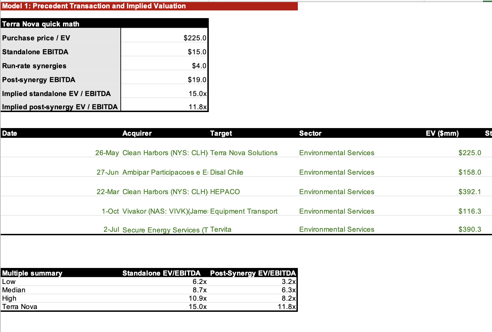
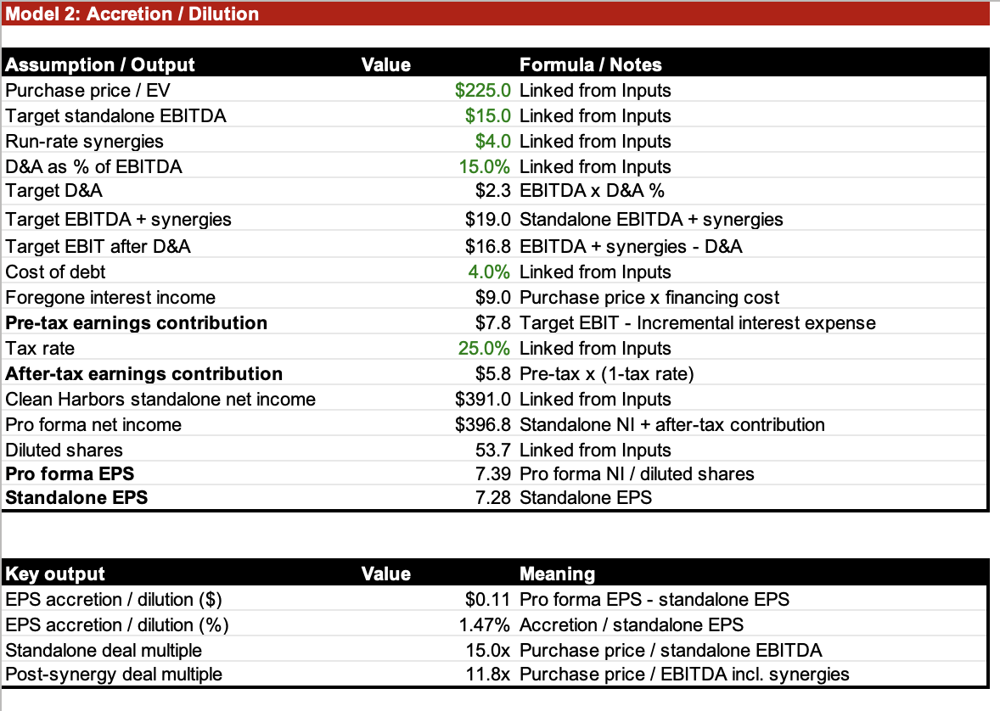
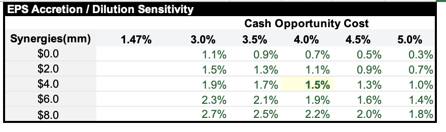

Clean Harbors / Terra Nova
Clean Harbors, a waste management and industrial services business, acquired Terra Nova Solutions in May of this year. Terra Nova is a company specializing in industrial waste and field service needs; essentially a much smaller regional platform operating in overlapping service lines across the Carolinas.
What drew my attention to this deal is that Clean Harbors is not buying a completely new business line. It is acquiring a smaller regional operation with overlapping hazardous waste, transportation, and field service capabilities. The operation is less about diversity and more about density, as it expands Clean Harbors’ footprint in the Carolinas and allows them to capture synergies in a market they already understand.
A large portion of middle-market IB transactions are not built around flashy dramatic mergers, but around prudent practical transactions. Furthermore, this was an all-cash deal. I’m interested to see whether or not the $225M purchase price is justified by potential strategic benefits for Clean Harbors.
In order to determine this, I will be creating two models. First is a precedent transaction analysis, so that I can see whether Clean Harbors paid a reasonable EBITDA multiple compared to similar services transactions. Second is an accretion/dilution model to test whether the earning contributions and synergies can offset the opportunity cost of Clean Harbors’ cash funding.
The first excel tab contains inputs about the deal. I sourced input data mainly from press releases and PitchBook. Part of the reason I chose to analyze this deal is because they gave me the exact synergy value creation: $4M. Many deals I’ve looked at will disclose other metrics like EBITDA or company employee count, but not synergies. The press release also mentioned that forward revenue of Terra Nova is expected to be between $45-50 million, and $15M adjusted EBITDA.
Using this information, the median standalone EV/EBITDA multiple is 8.7x for similar deals, while the maximum is 10.2x. On a post-synergy basis, the median EV/EBITDA multiple declines to 6.2x, reflecting the impact of assumed or disclosed run-rate synergies on the effective purchase multiple. Furthermore, Clean Harbors had multiples of 15x and 11.8 for pre-post synergy respectively, which is above the maximum for all of my comps.

This suggests that Clean Harbors may be paying a premium relative to other transactions, likely requiring strong strategic rationale or other qualitative benefits to justify the purchasing price.

The deal does end up being accretive, but barely. Pro forma EPS end up at 7.34, which is 0.11 higher than standalone EPS. This confirms that the target after-tax earnings contribution exceeds the after-tax opportunity cost of cash. The purchase added 1.5% to EPS, and adds to EPS even for cash opportunity costs from 3-5%.

Clean Harbors paid a premium relative to other comps for this company, however the acquisition is still financially defensible. The deal is only modestly accretive, and Clean Harbors appears to pay a higher multiple willingly in order to increase density in the Carolinas and still clear the cash opportunity cost hurdle.